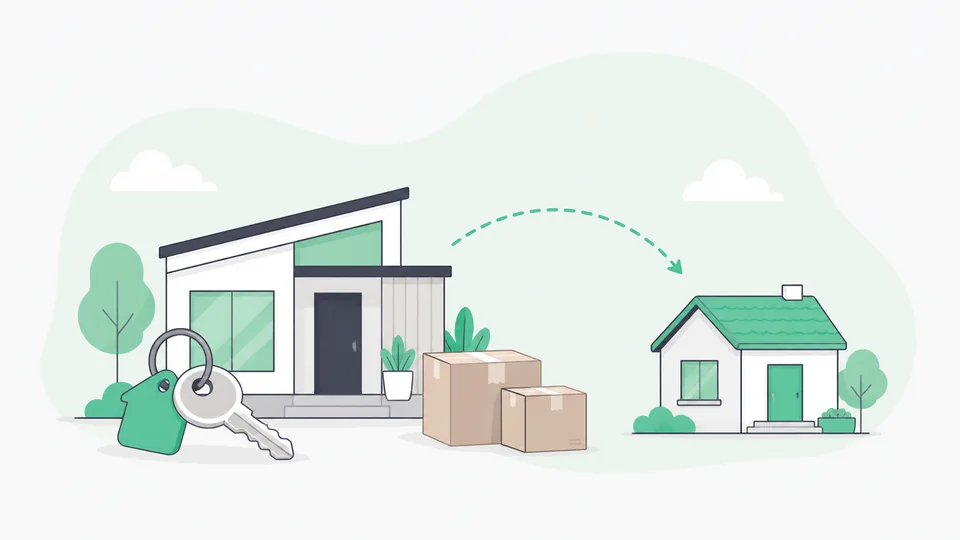

1주택자 전세 이사·대출 갈아타기 체크리스트
집을 가진 상태에서 전세로 옮기는 일은 대출 심사와 이사 일정이 동시에 걸립니다. 순서를 잘못 잡으면 잔금일에 돈이 비거나, 대출 한도가 생각보다 줄어드는 일이 생깁니다. 확인할 항목을 순서대로 정리했습니다.

진행 순서 — 돈이 비는 구간을 만들지 않는 법
- 1기존 집 활용 계획 확정매도인지 임대인지 먼저 정합니다. 매도한다면 잔금일이 전세 잔금일과 맞물려야 하고, 임대한다면 임차인 모집 기간이 필요합니다.
- 2대출 한도 조회은행 앱 예비 심사로 내 DSR과 전세대출 가능액을 먼저 확인합니다. 이 단계에서 한도가 부족하면 조건을 바꿔야 합니다.
- 3가계약·본계약가계약금을 걸고, 계약서에 대출 불발 시 해제 조건을 넣습니다.
- 4보증기관 심사HUG·HF·SGI 중 보증 가능 여부를 확인합니다. 보증 한도와 보증료율이 은행별로 다릅니다.
- 5기존 보증금 반환 → 잔금같은 날 오전에 기존 집 보증금을 받고 오후에 새 집 잔금을 치르는 일정이 안전합니다.
- 6전입신고·확정일자잔금 당일 또는 다음 날 처리합니다. 보증보험 가입 조건인 경우가 많습니다.
1주택자의 전세대출은 '추가 부채'로 계산됩니다
주택을 보유한 상태에서 받는 전세자금대출은 심사에서 기존 주택담보대출과 함께 잡힙니다. DSR(총부채원리금상환비율)은 모든 가계대출의 1년치 원리금을 합쳐 소득으로 나누므로, 주담대가 있는 사람은 전세대출 한도가 크게 줄어듭니다.
전세대출을 DSR에 얼마나 반영하는지는 상품과 규제 시점에 따라 달라졌습니다. 이자만 반영되던 시기와 원금 일부가 반영되는 시기가 있었으므로, 심사 전에 은행에 DSR 산정 내역을 서면으로 요청하는 것이 가장 확실합니다.
| 항목 | 왜 중요한가 |
|---|---|
| 부부합산 소득 | 공동명의·부부합산 상품이면 소득이 늘지만 배우자 부채도 함께 들어갑니다. |
| 부부합산 부채 | 배우자 명의 신용대출·카드론도 합산되면 한도가 줄어듭니다. |
| 비과세 소득 제외 | 식대·차량보조금은 심사 소득에서 빠집니다. 월 20만원 식대면 연 240만원이 소득에서 제외됩니다. |
| 마이너스통장 한도 | 실사용액이 아니라 약정 한도로 잡히는 경우가 많습니다. |
| 기존 전세대출 | 새 대출을 받기 전에 갚아야 DSR이 내려갑니다. |
정확한 한도는 DSR 한도 계산기에 연소득과 기존 대출 원리금을 넣어 확인할 수 있습니다. 부부 합산 여부를 바꿔 가며 두 번 계산해 보면 차이가 보입니다.
갱신·이사 3주 전 체크리스트
| 시점 | 할 일 | 확인할 것 |
|---|---|---|
| 3주 전 | 대출 한도 조회 | DSR, 보증기관별 한도, 필요 서류 목록 |
| 2주 전 | 보증기관 심사 신청 | 보증료율, 보증 가능 금액, 가입 조건 |
| 1주 전 | 이사·입주 청소 예약 | 엘리베이터 사용 시간, 주차 |
| 3일 전 | 기존 대출 상환 예약 | 중도상환수수료, 말소 서류 |
| 잔금일 | 보증금 반환 → 신규 잔금 | 계좌이체 확인증, 영수증 |
| 잔금일+1 | 전입신고·확정일자 | 보증보험 가입, 관리사무소 등록 |
계약서에서 꼭 확인할 조항
- 대출 불발 시 계약 해제 — "전세자금대출 불승인 시 계약금 반환" 조항이 없으면 계약금을 잃을 수 있습니다.
- 등기부등본 확인 — 근저당·가압류·신탁 여부를 계약 전과 잔금 전 두 번 확인합니다.
- 보증보험 가입 가능 여부 — 선순위 채권과 보증금 합계가 주택 가격의 80%를 넘으면 거절될 수 있습니다.
- 관리비·수선비 부담 — 누가 무엇을 부담하는지 명시합니다.
관련 계산기
- DSR 대출 한도 계산기 — 소득과 기존 부채로 추가 대출 가능액을 계산합니다.
- 전세 vs 월세 계산기 — 연 실질 주거비와 손익분기 전환율을 비교합니다.
- 대환 실익 계산기 — 기존 대출을 갈아타는 것이 이득인지 계산합니다.
- 중도상환 vs 예치 계산기 — 보증금 반환 후 대출 상환이 유리한지 판단합니다.
자주 묻는 질문
Q1주택자인데 전세대출이 되나요?▾
보유 주택을 처분하거나 임대하는 조건이면 가능한 상품이 있고, 무주택 요건을 요구하는 상품도 있습니다. 보증기관(HUG·HF·SGI)과 은행별 요건이 다르므로 거주 이전·처분 조건을 먼저 확인하세요.
Q부부합산이 항상 유리한가요?▾
아닙니다. 소득이 늘어 한도가 커질 수 있지만, 배우자의 신용대출·카드론까지 합산되면 오히려 한도가 줄 수 있습니다. 두 경우를 모두 계산해 비교하세요.
Q비과세 식대는 왜 소득에서 빠지나요?▾
월 20만원 이하 식대는 비과세 소득이라 과세 소득 계산에서 제외됩니다. 은행 심사도 과세 소득을 기준으로 하므로, 식대가 큰 직장인은 서류상 소득이 실제 수령액보다 낮게 보일 수 있습니다.
참고한 기준
- 금융위원회 「3단계 스트레스 DSR 시행방안」 — DSR 산정 대상과 가산금리
- 주택도시보증공사·주택금융공사 전세자금보증 안내 — 1주택자 요건, 보증 한도
- 주택임대차보호법 — 전입신고·확정일자 효력, 보증금 우선변제
※ 이 페이지는 일반적인 정보이며 부동산·금융 자문이 아닙니다. 계약 전 등기부등본과 보증기관 안내를 직접 확인하세요.